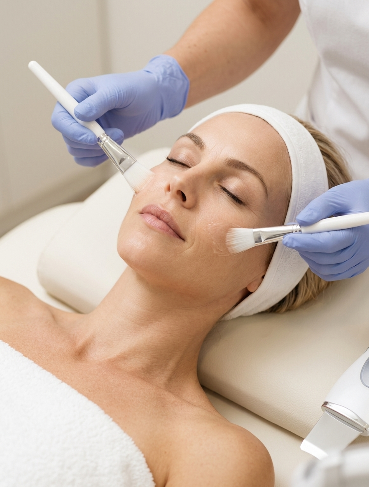

Después de semanas de sol, playa, piscina y cambios de rutina, es habitual que la piel del rostro llegue a septiembre con un aspecto distinto al que tenía en junio. Manchas que antes no estaban, una sequedad que no cede con la crema de siempre, una textura más áspera o una pérdida generalizada de luminosidad son señales muy frecuentes de que la piel necesita ayuda para recuperarse.
El sol acumula efectos con el paso de los años, y cada verano añade una capa más a ese proceso conocido como fotoenvejecimiento. La buena noticia es que existen protocolos y tratamientos en clínica pensados específicamente para esta etapa post vacacional, capaces de ayudar a la piel a recuperar el equilibrio, la hidratación y la uniformidad del tono.
En la clínica médico estética de Alicia Forcada planteamos la vuelta al cuidado de la piel después del verano como un proceso, no como una solución milagrosa de un solo día, adaptando cada protocolo a las características individuales de cada piel.
¿Qué le pasa a la piel después del verano?
La exposición solar prolongada, el calor, el agua salada o clorada y los cambios de humedad someten a la piel a un estrés acumulado durante meses. Aunque en verano la piel puede parecer más bronceada y "sana" a simple vista, debajo de esa apariencia suelen esconderse varios procesos:
- Aumento de la producción de melanina de forma irregular, dando lugar a manchas.
- Deshidratación cutánea por la exposición al sol, el aire acondicionado y el agua de mar o piscina.
- Debilitamiento de la barrera cutánea, que pierde capacidad de retener agua.
- Aceleración del envejecimiento cutáneo por el daño oxidativo de los rayos UV.
- Pérdida de luminosidad y aspecto apagado del rostro.
- Textura más áspera o irregular al tacto.
Todo esto explica por qué, aunque el bronceado se desvanezca en pocas semanas, algunos de sus efectos —como las manchas o la sequedad— pueden mantenerse mucho más tiempo si no se trata la piel de forma adecuada.
¿Quién nota más estos efectos?
La recuperación de la piel tras el verano puede ser especialmente relevante para personas que presentan:
- Manchas solares o hiperpigmentación en pómulos, frente o escote.
- Piel seca, tirante o descamada tras la exposición solar.
- Pérdida de luminosidad y tono apagado.
- Textura irregular o poros más visibles.
- Melasma o manchas que se intensifican con el sol.
- Signos de fotoenvejecimiento: líneas finas, flacidez leve o pérdida de firmeza.
- Piel sensibilizada por exposición solar intensa o quemaduras leves.
Cuando existen manchas muy extensas, lesiones cutáneas sospechosas o piel muy dañada, es importante realizar una valoración dermatológica antes de iniciar cualquier tratamiento estético.
Manchas solares: por qué aparecen y cómo se tratan en clínica

Los protocolos faciales profesionales ayudan a homogeneizar el tono y a recuperar la hidratación de la piel tras el verano.
Las manchas que aparecen tras el verano, también llamadas léntigos solares, son el resultado de una producción excesiva y desorganizada de melanina como respuesta de defensa frente a la radiación ultravioleta. Con los años, esa producción irregular tiende a acumularse en las mismas zonas, especialmente en el rostro, el escote y el dorso de las manos.
No todas las manchas son iguales, y por eso el abordaje debe ser siempre personalizado. Antes de recomendar cualquier tratamiento antimanchas, es necesario valorar el tipo de hiperpigmentación, su profundidad y las características de cada piel.
Tratamientos habituales para las manchas tras el verano
- Peelings despigmentantes: ayudan a renovar la superficie cutánea y a homogeneizar el tono de la piel de forma progresiva.
- Ácidos despigmentantes: actúan regulando la producción de melanina.
- Mesoterapia o vitaminoterapia facial: aporta antioxidantes y activos que favorecen la luminosidad.
- Tratamientos con láser o luz pulsada (según valoración): indicados en determinados tipos de manchas superficiales.
- Protocolos combinados con cosmética despigmentante de uso domiciliario, imprescindibles para mantener y potenciar los resultados.
En todos los casos, la protección solar diaria es la base sin la cual ningún tratamiento antimanchas puede ofrecer resultados estables en el tiempo.
Piel seca y deshidratada tras el verano: cómo recuperar la hidratación
El sol, el agua salada, el cloro y el aire acondicionado son grandes responsables de que, al terminar el verano, muchas pieles se sientan tirantes, ásperas o con descamación visible. La deshidratación cutánea no es lo mismo que la piel seca de forma constitutiva: en muchos casos se trata de una pérdida puntual de agua que la piel puede recuperar con el tratamiento adecuado.
¿Cómo se trabaja la hidratación en clínica?
- Limpieza facial profesional: elimina impurezas y prepara la piel para absorber mejor los tratamientos posteriores.
- Hidratación profunda con ácido hialurónico en diferentes pesos moleculares, para actuar en distintas capas de la piel.
- Mesoterapia facial hidratante: aporta agua, vitaminas y antioxidantes directamente donde la piel más lo necesita.
- Tratamientos que refuerzan la barrera cutánea, ayudando a que la piel retenga mejor la hidratación a diario.
- Pautas cosméticas personalizadas para el cuidado en casa, con activos hidratantes y reparadores adaptados a cada piel.
Una piel bien hidratada no solo se ve más luminosa, sino que también tolera mejor otros tratamientos estéticos, incluidos los despigmentantes.
Fotoenvejecimiento: el efecto acumulativo del sol en la piel
Más allá de las manchas puntuales de cada verano, la exposición solar repetida a lo largo de los años provoca lo que se conoce como fotoenvejecimiento: pérdida de firmeza, aparición de líneas finas, textura irregular, poros dilatados y un tono de piel menos uniforme.
Septiembre suele ser un buen momento para hacer balance del estado de la piel y plantear un protocolo de recuperación, ya que:
- La piel ya no está expuesta de forma directa y constante al sol.
- Muchos tratamientos, como los peelings o determinados ácidos, no son compatibles con la exposición solar intensa.
- Es el momento ideal para preparar la piel de cara al otoño e invierno.
Tratamientos habituales frente al fotoenvejecimiento
- Peelings químicos de renovación celular.
- Mesoterapia facial con antioxidantes y vitaminas.
- Tratamientos de bioestimulación cutánea.
- Protocolos combinados de hidratación, luminosidad y firmeza.
Cada protocolo debe ajustarse al grado de fotoenvejecimiento y a las necesidades concretas de cada paciente, por lo que la valoración profesional previa es un paso imprescindible.
¿Cuándo empezar a tratar la piel después del verano?
Cuanto antes se inicie el protocolo de recuperación, más fácil resulta mejorar el aspecto de la piel tras el verano.
No hace falta esperar a que las manchas se asienten o a que la piel esté extremadamente seca para empezar a cuidarla. De hecho, cuanto antes se inicie un protocolo de recuperación tras la exposición solar, más fácil suele resultar mejorar el aspecto de la piel.
Septiembre y octubre son meses especialmente recomendados para:
- Tratar manchas solares recientes, antes de que se asienten en capas más profundas.
- Recuperar la hidratación perdida durante los meses de calor.
- Iniciar tratamientos despigmentantes o renovadores que no son compatibles con el sol intenso.
- Preparar la piel para tratamientos más específicos de cara al otoño e invierno.
Una valoración inicial permitirá determinar qué tratamientos son prioritarios y en qué orden conviene aplicarlos.
Recuperar la piel tras el verano en Almazora, Castellón: cuidar hoy la piel de mañana
Si notas que tu piel ha salido del verano con manchas, sequedad, textura irregular o falta de luminosidad, un protocolo de recuperación en clínica puede ayudarte a devolverle el equilibrio.
En la clínica médico estética de Alicia Forcada entendemos que cada piel llega al final del verano en una situación diferente. Por eso, antes de recomendar cualquier tratamiento, valoramos el tipo de piel, el grado de daño solar y los objetivos de cada paciente.
El objetivo no es borrar de un día para otro los efectos del verano, sino acompañar a la piel en un proceso de recuperación progresivo, seguro y adaptado a sus necesidades reales.
Preguntas frecuentes sobre la recuperación de la piel tras el verano
¿Las manchas solares desaparecen solas con el tiempo?
Algunas manchas superficiales pueden atenuarse de forma natural, pero muchas tienden a mantenerse o incluso a oscurecerse si no se tratan y si la piel vuelve a exponerse al sol sin protección adecuada.
¿Cuánto tiempo se tarda en recuperar la piel después del verano?
Depende del tipo de piel y del grado de daño solar. La hidratación suele mejorar en pocas semanas, mientras que el tratamiento de manchas y fotoenvejecimiento requiere protocolos más largos y, en muchos casos, varias sesiones.
¿Es seguro empezar tratamientos despigmentantes en otoño?
Los meses de menor radiación solar suelen considerarse un buen momento para este tipo de tratamientos, siempre acompañados de una protección solar adecuada durante todo el proceso.
¿La limpieza facial ayuda a recuperar la piel tras el verano?
Sí, una limpieza facial profesional ayuda a eliminar impurezas acumuladas y prepara la piel para absorber mejor los tratamientos hidratantes o despigmentantes posteriores.
¿Qué diferencia hay entre piel seca y piel deshidratada tras el verano?
La piel seca es un tipo de piel que produce menos grasa de forma natural, mientras que la deshidratación es una pérdida puntual de agua que puede afectar a cualquier tipo de piel, especialmente después de la exposición solar, el agua salada o clorada.
¿Quieres saber qué necesita tu piel después del verano?
Tu piel también necesita un cambio de rutina al terminar el verano.
Si notas manchas, sequedad, textura irregular o falta de luminosidad, pide una valoración en la Clínica Médico Estética Alicia Forcada y descubre qué protocolo puede ayudarte a recuperar el equilibrio de tu piel.
No esperes a que las manchas se asienten. Empieza a cuidar tu piel ahora.
📲 Reserva tu cita y pregunta por nuestros protocolos de recuperación de la piel tras el verano.
¿Buscas un tratamiento para manchas solares o piel seca tras el verano en Almazora, Castellón? En nuestra clínica médico estética, Alicia Forcada, podemos valorar las necesidades de tu piel y recomendarte el protocolo más adecuado. Contacta con nosotros y reserva tu cita.


.webp)